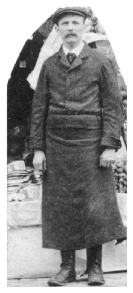
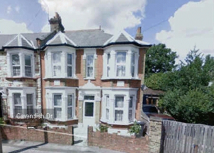

In about 1922 the Handley family experienced a traumatic event that was to re-shape their lives. It suddenly became revealed that Arthur Handley had formed a relationship with the young woman cashier who was his employee at the fish shop. It seems that Arthur had no alternative intentions for his future life and that his new relationship was entirely opportunistic. I imagine that all Hell broke loose. Arthur and the Cashier fled to start a new life elsewhere. The fish shop was sold and Mary and Daisy moved to 72 De Vere Gardens, Ilford. Dora was not present having married in 1921. The photo of Arthur and Mary, displayed to the right, was taken at Dora and Stanley's wedding when Arthur was aged 50. It appears that, in consequence, the acrimony towards Arthur was immense indeed. His desertion was perceived as treachery, and it looks as though there was a family conspiracy to "airbrush" him out of history. In terms of the "newspeak" of Orwell's Nineteen Eighty-Four, Arthur became an "unperson". During my childhood my mother almost never mentioned her father. She would simply say that he was dead, and seemed to speak with satisfaction. To be as objective as I can I would say that this was a successful marriage. It lasted nearly 30 years and raised three children to adulthood. Arthur was a hardworking and enterprising man who successfully ran his own business and supported his family. As people grow older they change, of course, not usually for the better. Arthur's relationship with the Cashier was evidently short-lived. She is not mentioned in his Will made in 1925. He bequeaths all his worldly possessions to his wife Mary Ann Handley. But there are some curious aspects to the Will and these are discussed on the next page. Arthur
Handley's death: It seems that Arthur's death was a "moment of truth" for the rest of the family. Having passed the previous twelve years ostracizing him they found themselves confronted with a new and unwelcome situation. They would have to dispose of his body because no-one else was going to do it. It looks as though Arthur's demise was anticipated. Somebody decided to act with great haste. The undertaker was waiting like a vulture.  Arthur
Handley's last rites: So I presume that Arthur had just five "mourners" all of whom hated him. Or perhaps they boycotted the funeral despite having arranged it. But I would prefer to believe that there was another, less ugly reality. At this distance in time it is hard enough to adduce even the simplest of facts, and I have felt compelled to apply constructions based upon scant evidence. The main fact, here, is that I don't know what really happened. I would invite the reader to finish the story, if possible, in whatever way he/she might choose. As I have said, the subject of my grandfather was never discussed with me. But when I was aged 15, Gangan unexpectedly presented me with a small snuffbox containing a little photograph, displayed to the right. For some reason she had trimmed it with nail scissors, thereby depriving it of the context of the fish shop in the background. She wanted me to have this photo of her husband, and this might suggest that she did not entirely agree with the family policy of removing Arthur from history.
Arthur's Death Certificate shows that he died here in April 1934 aged 63 years. The photograph is provided by Google Street View. 
2. Arthur died at 26 Cavendish Drive in Leytonstone, then in Essex. 3. Arthur's occupation is given as "Caterer".
4. The cause of death is given as: 5.
The death was registered on the same day by a person who appears to be
|